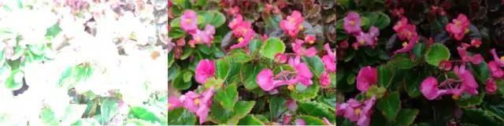
了解自動曝光(AE)的核心目標、曝光三要素，以及AE系統如何透過統計亮度來調整參數，確保畫面穩定。
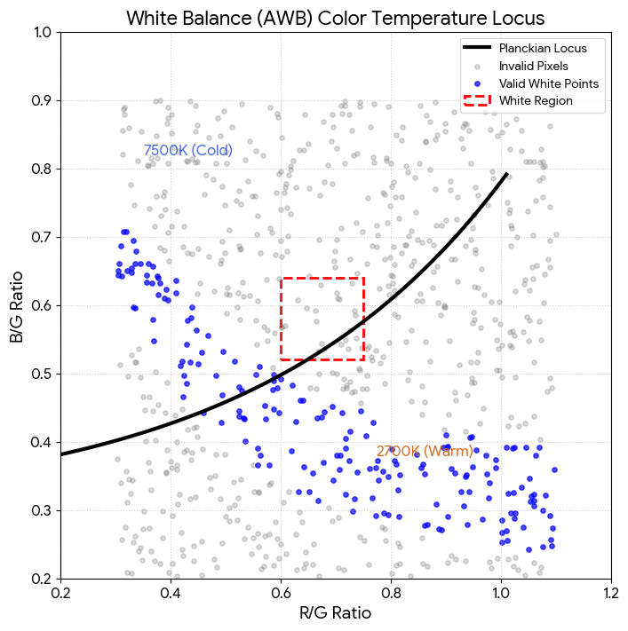
從普朗克軌跡、白區邊界與權重設計，到增益係數公式與實務調校觀點，完整整理 AWB 的原理與應用。
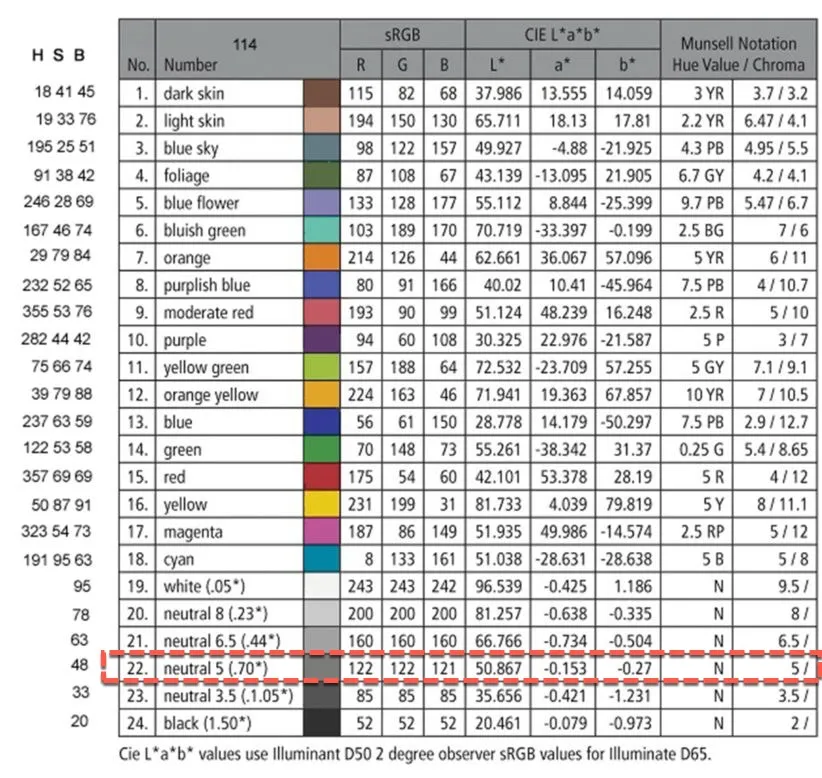
CCM 如何充當「翻譯官」，將 Sensor 的原始色彩轉換成符合人類視覺標準的顏色。
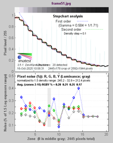
Imatest 在測試影像 Gamma 值時，通常會使用 Q-13 標準測試圖表（或稱作灰階梯尺）。這個圖表的設計是用於量測相機的亮度響應，也就是相機如何將場景中的不同亮度值轉換為影像中的像素值。。
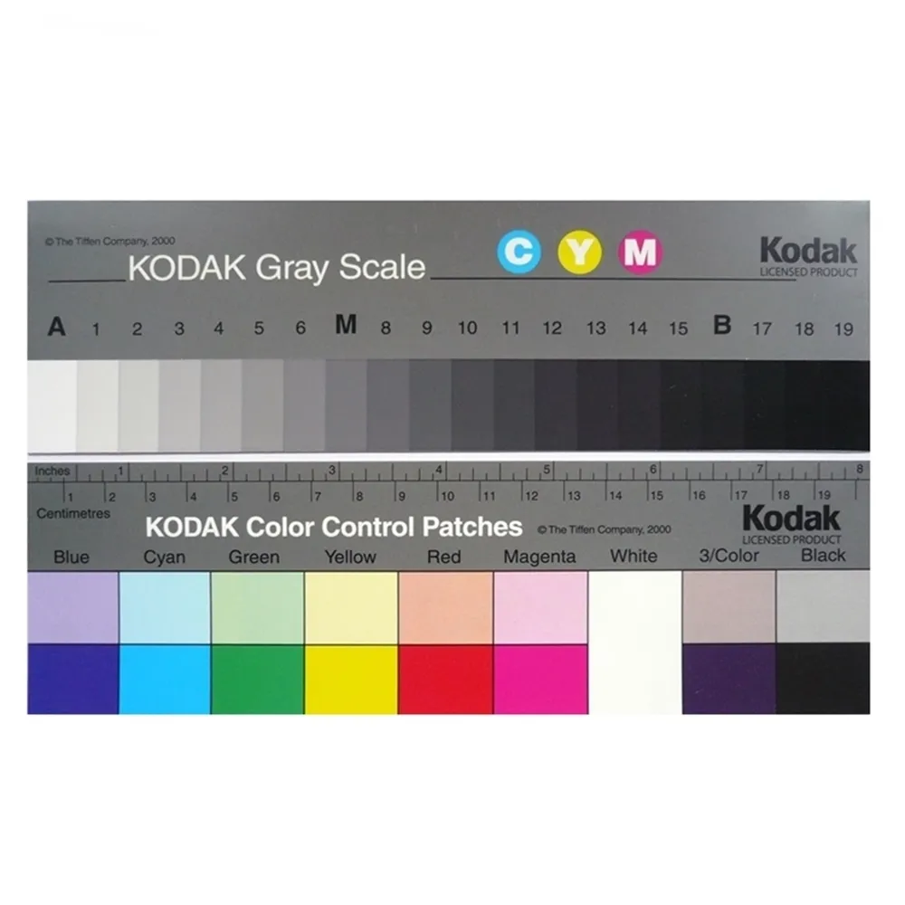
本報告針對業界常用的「Q‑13 灰階卡 / 色階卡」作技術說明與實務導引，包含：Q‑13 的物理規格與量測參數、在影像擷取（掃描/數位拍攝）中如何作為色彩與調性（tone）判定標準、配合業界品質規範（FADGI、Metamorfoze、ISO 19264）時的檢測流程與接受準則，以及操作上常見問題與 QC（品質把關）檢核表。
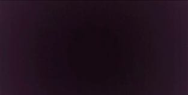
了解為何影像訊號處理的第一步通常是黑電平校正，以及它對色彩和動態範圍的關鍵影響。
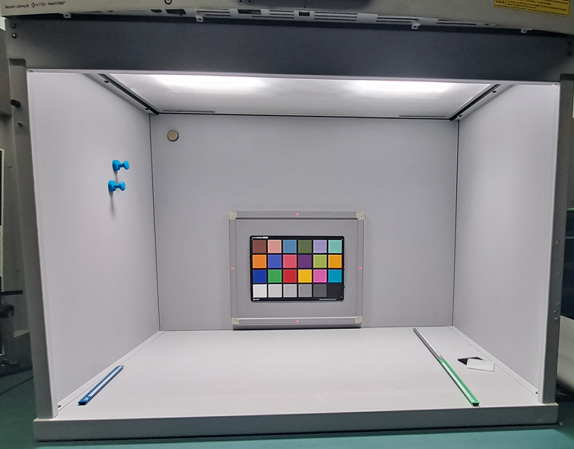
了解燈箱色溫與光譜，以及它對影像調整關鍵影響。
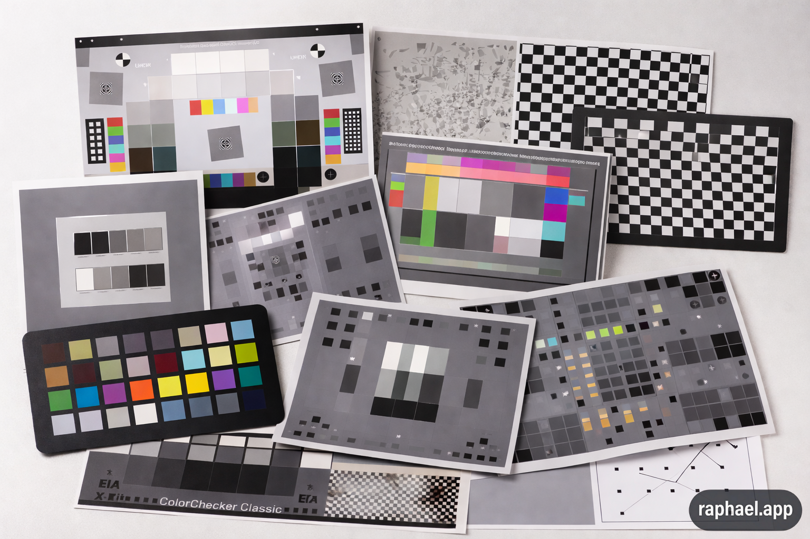
介紹影像調整需要的圖表，以及它使用ISP調整與驗證的用途。
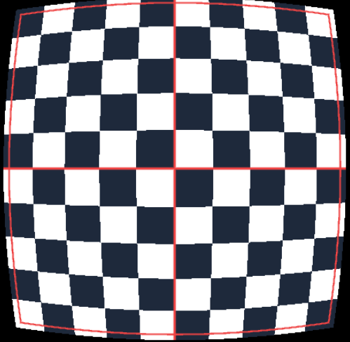
整理 LDC 的幾何原理、Brown-Conrady 模型、標定流程，以及在 ISP 調校中如何平衡畫質、視角與硬體成本。
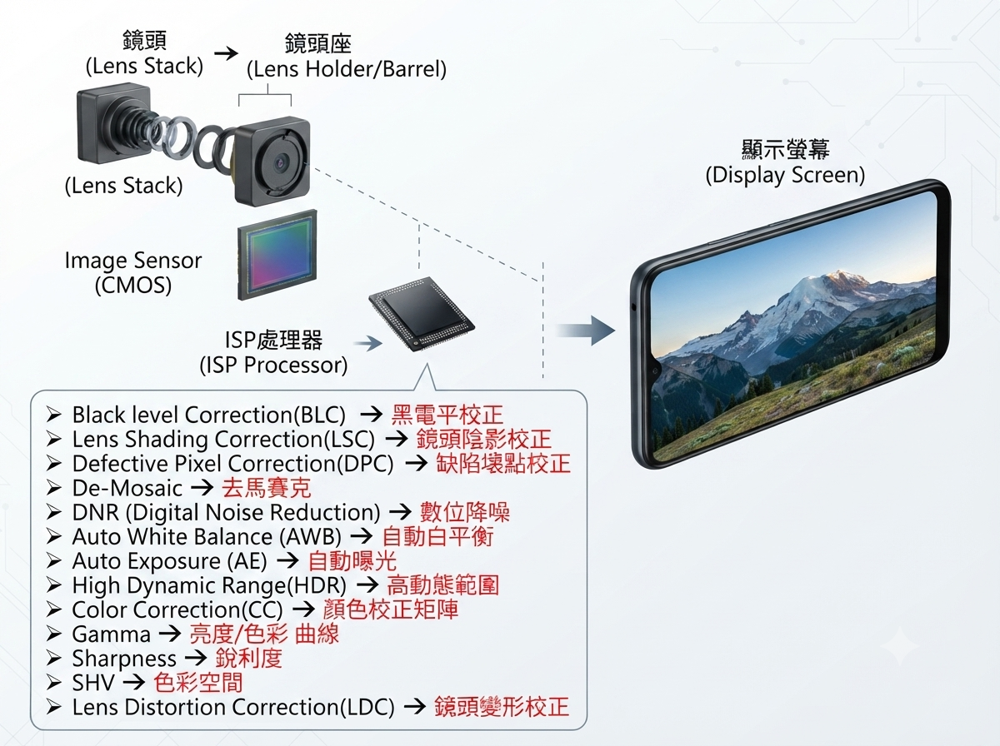
ISP(Image Signal Processing)，為影像訊號處理。此篇文章主要是想要介紹ISP基本介紹與處理影像的功能。
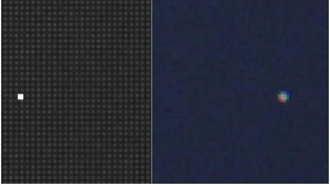
DPF(Defect Pixel Correction，壞點校正)，用於修復影像感測器（CMOS/CCD）上因製造缺陷或老化產生的亮點、暗點及彩點的技術。
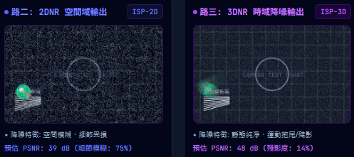
什麼是3D降噪和2D降噪？一個演算法如果只利用同幀圖像資訊，稱為2D降噪；利用前後幀資訊稱為3D降噪。
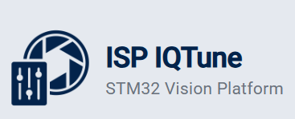
說明STM-32 IQ Tune 的流程，依照STM提供的tunning 文件。
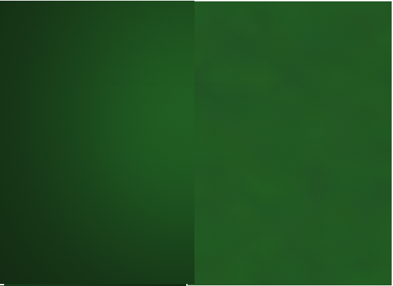
說明Lens shading 出現的原因與校正的方式並說明。
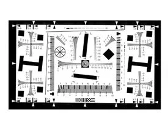
MTF 與 SFR 的差異與測試詳細方法說明。
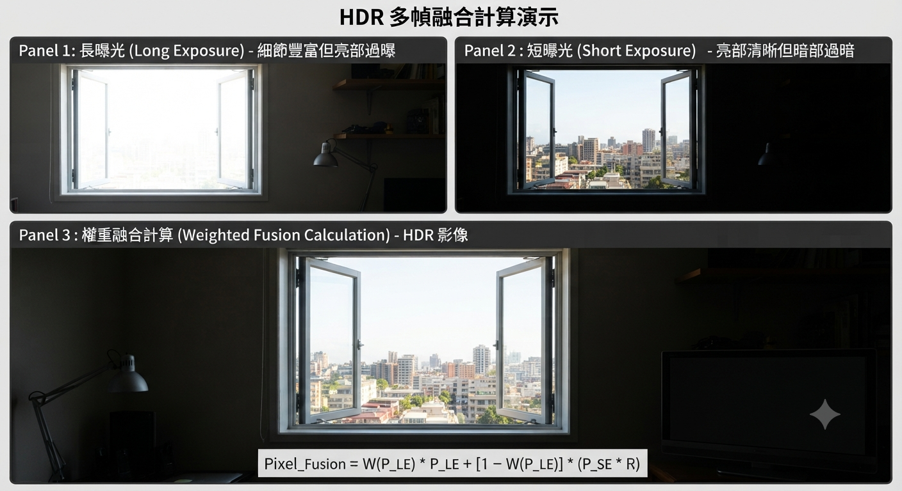
在 ISP領域中，WDR（寬動態範圍） 與 HDR（高動態範圍） 都是為了解決高反差光線環境下的明暗細節保留問題，在此說明兩者的不同。
Imatest 與 Image Engineering 等專業廠商，針對手機、汽車、醫療及安全監控等多元產業，研發出各類測試圖卡、照明設備以及自動化測量軟體。文件詳細列出了如解析度、色彩準確度、動態範圍及畸變等關鍵性能指標的評估方法。
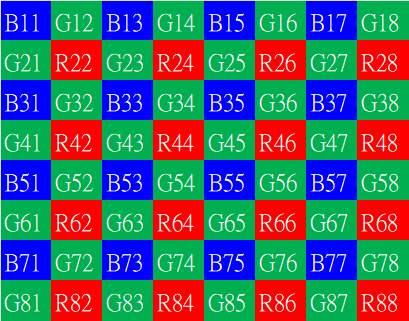
去馬賽克 (Demosaic) 是圖像信號處理（ISP）管線中不可或缺的步驟，其核心任務是將感測器輸出的單色「馬賽克」數據轉換為全彩的 RGB 影像。
圖像信號處理（Image Signal Processor, ISP）的工作流程是將感測器（Sensor）輸出的原始數據（RAW Data）轉換為高品質數位影像的一系列複雜步驟，本文章說明RAW數據透過ISP轉換到RGB影像的過程與說明。
使用 SigmaStar IQ Tool 進行影像調整是一個系統性的過程，涵蓋了從硬體連線、基礎校正到細部畫質調優的完整流程。
此說明 ESP ISP 影像處理演算法的所有可調參數。IPA 是一個管線化（pipeline）的影像處理框架，由多個演算法模組組成。
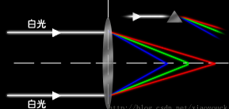
這是一個使用 HTML5 與 JavaScript 製作的單一檔案動態演示。它將光學色散與透鏡聚焦轉化為實際的 Lens Shading（鏡頭邊角失光/暗角） 物理成像演示。
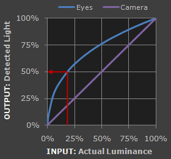
這是一個使用 HTML5 與 JavaScript 製作的單一檔案動態演示。程式完全模擬了感光元件（Sensor）輸出的原始線性（Linear）暗淡影像，穿過中央可調的 Gamma Transfer 非線性轉換曲線後，在右側生成符合人類肉眼視覺知覺（較明亮、對比正確）的影像。
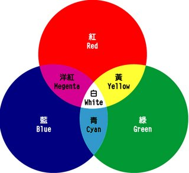
這是一個使用 HTML5 與 JavaScript 製作的單一檔案動態演示。這個程式利用了 CSS 的 backdrop-filter（背景濾鏡）與 mix-blend-mode（混合模式）技術，在不損壞原始圖片的情況下，透過三個滑桿（R、G、B）即時改變覆蓋層的顏色，從而達到模擬影像色彩調整的效果。
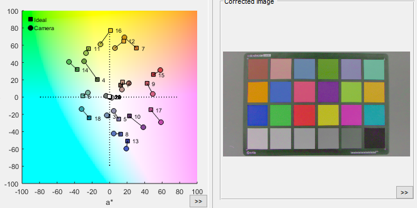
這個程式使用 HTML5 Canvas 搭配 JavaScript 的 ImageData（像素級處裡） 來實現。只要滑桿一變動，就會即時將原始圖片像素透過 CCM 矩陣轉換，並渲染出結果。
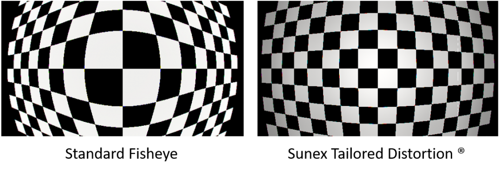
它包含一個預設的棋盤格畫面（最適合觀察畸變），並提供一個滑桿，讓您可以即時從桶狀畸變（廣角鏡頭）調整到枕狀畸變（長焦鏡頭），完美重現校正前的變形與校正後的還原過程。
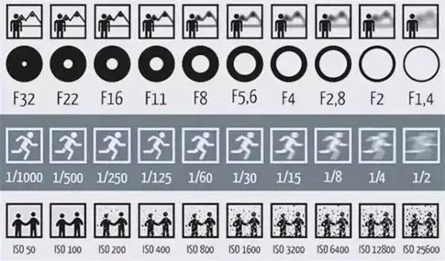
使用者調整三個滑桿時，畫布上的「主體、背景、動態模糊、噪點（雜訊）」會即時連動變化。
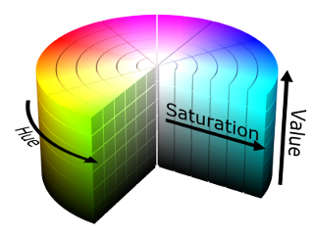
使用 HTML5 Canvas 進行像素級（Pixel-level）的色彩空間轉換（RGB 轉 HSV），再疊加數位感光度的雜訊演算法。使用者調整三個滑桿時，畫布上的「色調, 飽和度, 明度」會即時連動變化。
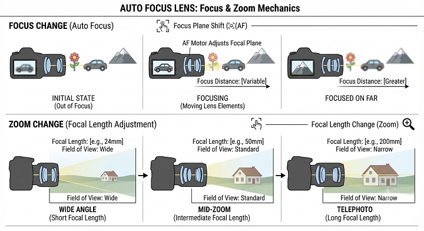
使用 CSS 3D Transform（處理 Zoom 的大小透視） 結合 CSS SVG Filter（處理最真實的光學鏡頭景深模糊，而非一般的模糊）。。使用者調整三個滑桿時，畫布上的「焦距, 變焦, 光圈」會即時連動變化。
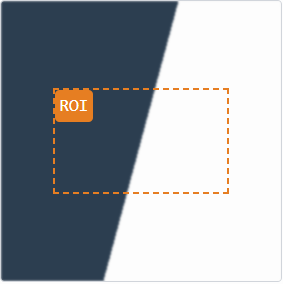
本工具依據 ISO 12233 標準，模擬從「擷取斜邊」到「傅立葉轉換」輸出 SFR 曲線的完整四步驟。
本工具深入理解 ISP 中兩種動態範圍處理技術的本質差異。透過即時模擬，看見多幀融合與色調映射如何在計算流程中各司其職。
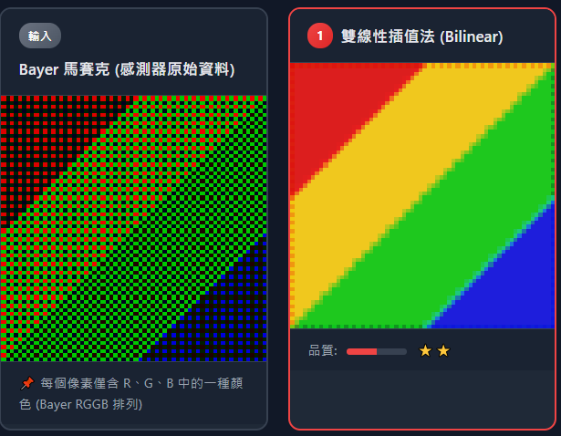
本工具深入理解雙線性插值、邊緣導向插值、色差相關性三種演算法的處理差異